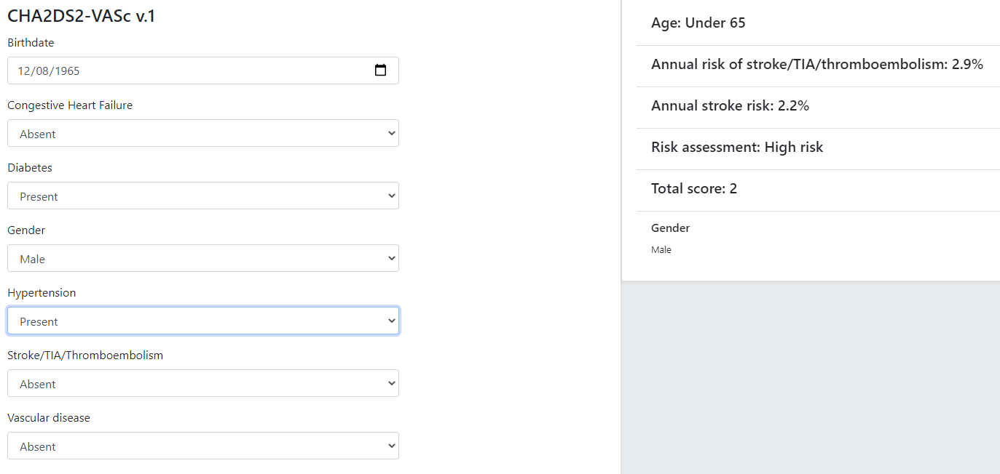
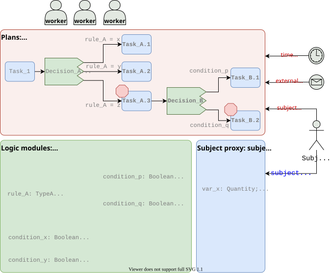
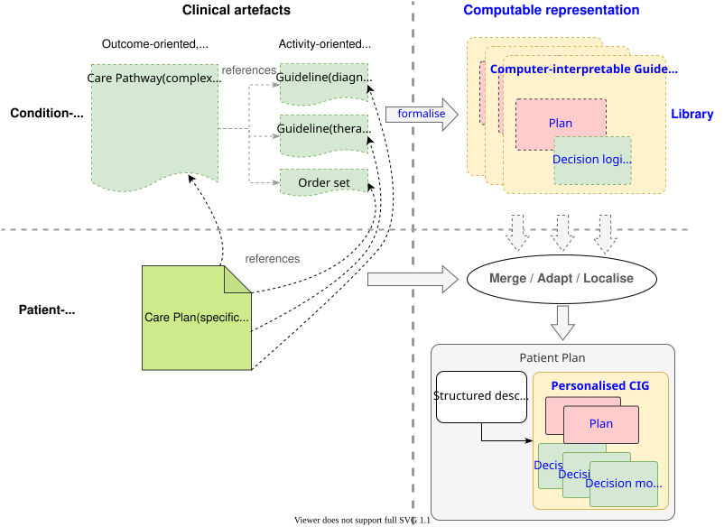
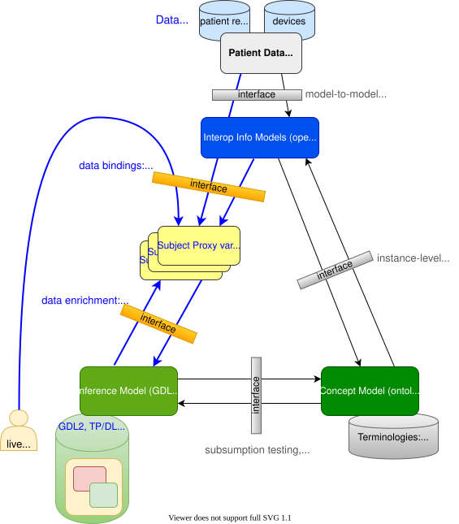

Care Process Artefacts and their Formalisation
Various kinds of potentially formalisable artefact commonly used in healthcare are implied by the needs described earlier, including the following:
-
care pathway: evidence-based plan of care for a complex condition;
-
clinical practice guideline (CPG): evidence-based protocol for a specific clinical task;
-
order set: 'template' set of combined orders for tests, medications etc relating to a condition;
-
care plan: descriptive plan for individual patient care, typically either oriented to in-patient care or post-discharge nursing care.
These artefacts do not constitute the totality of requirements of formal care process models, because they generally do not take into account the cognitive aspect of their use in care delivery by human professionals. The final inferences, decisions and actions of the latter will often use pathways and guidelines as a major input but only in the 'copilot' sense described above.
Nevertheless, the formalisation of the semantics of these artefacts is a major part of the overall semantics of the languages described here. Accordingly, what these are considered to consist of within the openEHR process architecture, and how they interrelate is described below.
Best Practice Artefacts
Clinical Practice Guidelines (CPGs)
| in openEHR specifications, the term guideline is used as a synonym for 'clinical practice guideline'. |
A commonly cited definition of a guideline is (emphasis added):
-
a systematically developed statement designed to assist health care professionals and patients make decisions about appropriate health care for specific clinical circumstances (Oxford Centre for Evidence-based Medicine).
A more recent version of this puts emphasis on the evidential basis:
-
Clinical guidelines are statements that include recommendations intended to optimize patient care that are informed by a systematic review of evidence and an assessment of the benefits and harms of alternative care options [1]
Guidelines are usually either:
-
therapeutic, i.e. oriented to describing a procedure e.g. intubation; medication dosing and administration; and management of a specific condition e.g. asthma, or;
-
diagnostic, such as for diagnosing various forms of angina.
Many diagnostic guidelines are relatively simple scores based on a number of patient variables, whose aim is to stratify risk into categories corresponding to type of intervention. Examples of guidelines include:
-
American College of Emergency Physicians (ACEP) Covid19 Severity Classification tool;
-
Australian Clinical Guidelines for the Diagnosis and Management of Atrial Fibrillation 2018 [2].
Score-based Decision Support Guidelines
A very common kind of clinical guideline takes the form of a score, and consists of the following logical parts:
-
an input variable set;
-
one or more score functions of the input variables that generates a numeric value(s);
-
one or more stratification table(s) that convert score values to care classifications, e.g. 'refer to ICU' / 'monitor 24h' / 'send home'.
Although technically relatively simple, this kind of guideline can be very effective in changing clinical behaviour, primarily due to the fact that the score function and stratification table reflect the current evidence for the relevant condition. Such guidelines are usually executed in a single-shot fashion to generate recommendations for the clinician at the point of care. They are often visualised as a single form containing the input variables, the score and the resulting classification, with the input fields being populated from an EMR and/or manually fillable as required.
The openEHR GDL2 language is used to represent this kind of guideline, and implementations typically show interactive forms such as the following.

Some hundreds of similar guidelines are available in the openEHR GDL2 Clinical Models Repository.
Care Pathways
The notion of care pathway, also known by names such as 'integrated care pathway' (ICP) and 'critical care pathway', has various definitions in healthcare, such as summarised by the European Pathway Association (E-P-A) and many other authors and organisations. Based on these, we take a care pathway to be:
-
a structured description of complex care based on evidence, oriented to managing a particular primary condition;
-
patient-centric (rather than institution- or procedure-centric) and therefore multi-disciplinary and cross-enterprise.
A care pathway is thus a higher-level entity aimed at achieving a patient outcome, whereas a guideline is aimed at performing a more specific professional task. Consequently, care pathways typically refer to one or more guidelines that describe in detail how to deal with specific situations within the management of the condition ([3], [4]). Care pathway examples include:
Order Sets
Within the above-described artefacts references to so-called order sets may exist. An order set is understood as:
-
a set of orders for diagnostic tests and/or medications and/or other therapies that are used together to achieve a particular clinical goal, e.g. the drugs for a particular chemotherapy regimen are often modelled as an order set;
-
potentially a detailed plan for administration of the items in the order set, which may be a fully planned out schedule of single administrations on particular days and times;
-
descriptive meta-data, including authors, history, evidence base, etc.
In most EHR/EMR sytems, the first item corresponds to a set of 'orders' or 'prescriptions', while the second is a candidate for representation as a formalised plan.
In the openEHR process architecture, an order set is considered to be an artefact of the same general form as a CPG, oriented to closely related orderable activities. It is therefore treated as a specific sub-category of plan artefacts, whose initial actions consist of a condition-specific set of orders with associated descriptive information. Administration actions may follow, within the same plan. Similarly to a care pathway or CPG, an order set may need to be modified for use with a real patient due to interactions or contra-indications, and any administration plan provided (perhaps as a template) may need to be copied and adapted for use in a larger patient-specific plan. Following this analysis, the question of formal representation of order sets is assumed to be solved via the same plan representation described for care pathways and CPGs.
Representation Challenges
Care pathways and guidelines are published based on studies performed on the available evidence base. This often occurs initially at a specific institution that is a recognised center of excellence for a condition (e.g. aortic dissection), or as the result of a wider research study focussed on a specific disease cohort (most rare diseases). Over time, successful guidelines and pathways find wider adoption and may migrate to a professional college or national institute for the long term. Regardless of the development history, there are a number of important issues that affect potential formalisation.
The first is the problem of partial coverage. There is no guarantee that any particular condition will have a published care pathway or guidelines for all of its subordinate activities. Coverage is likely to be partial, or sometimes completely absent. Consequently, the definition of a pathway for a particular patient (type) may have to be undertaken locally by institutions and/or simply achieved by 'old school medicine'. This implies that some automatable patient plans will be developed manually rather than from any existing pathway template.
The second issue is the problem of adaptation, which can be divided into two sub-problems. The first is that each pathway or guideline is designed to address one primary condition (sepsis, ARDS, angina etc) and will not generally be applicable unmodified to a real patient, due to patient specifics including co-morbidities, phenotypic specificities, current medications and patient needs and preferences. We might term this as a merge problem since it is essentially a question of arriving at a safe pathway for an actual patient that accounts for all of the patient’s current conditions (and therefore multiple applicable care pathways), medications and phenotypic specifics. Secondly, local practice factors such as formulary, local protocols, type of care setting (community clinic/hospital versus tertiary care centre/teaching hospital), availability and cost of imaging, drugs for rare conditions etc, will often constrain and/or modify any standard pathways or guidelines. We can understand this as a localisation problem.
A third issue is the practical challenge of there being multiple guidelines and pathways for the same purpose (i.e. diagnostic or therapeutic pathway), published by different institutions, including in different countries. Such guidelines may have been arrived at via different methods, evidence bases and may have variable coverage of the condition or procedure. They may also be expressed at differing levels of detail. We can think of this as a competition problem. Generally, the competition problem will be solved organisationally, e.g. by the institutional clinical quality board / group making choices, or even synthesising 'best of breed' versions from the existing candidates for a given use.
Assuming that the competition problem is solved within the local context, the merge problem will still usually occur with the consequence that more than one pathway may apply to a patient, e.g. one for chronic care and one for an acute complaint. There may be conflicts between the pathways - commonly in medications recommendations - but also between the pathways and the other patient specificities. Well-written pathways and CPGs usually include obvious contra-indications for medications (e.g. being on anti-rejection medications post transplant conflicts with some chemotherapy drug classes), common phenotypic features (e.g. being female, being allergic to taxanes), and patient history (e.g. being pregnant). There is no guarantee that any given pathway or guideline covers all possible conflicts, hence manual inspection, adjustment and customisation is almost always required. Localisation factors often means further modifications or constraints.
There currently appears to be little science on adaptation of guidelines, which means there is no obvious candidate method that might lead to automated or computer-aided adaptation. However communities such as the Guidelines International Network have working groups related to adaptation and localisation, which may lead to such methods in the future [5].
For convenience, we term a care pathway- or guideline-like artefact for a specific patient, incorporating any necessary conflict resolution, merging and localisation, a patient plan.
With respect to the challenge of applying information technology to process-oriented care, key questions to do with published (natural language) pathways and guidelines are:
-
the extent to which they are formally representable, including contra-indications and conflicts;
-
how conflict, merge and localisation is solved to produce an automatable patient plan.
A Descriptive Model
We make a baseline assumption that guidelines and care pathways are essentially the same kind of entity in terms of structure, and are formalisable with the same model or language, with any differences (e.g. in goal or subject) handled by variable elements of the formalism. A survey of published pathways and guidelines shows that they consist of:
-
goal (pathway) or purpose (guideline);
-
indications, i.e. clinical pre-conditions for use;
-
plan: structured natural language statements describing a plan, i.e. a struconsisting of tasks (also known as activities), decisions (understood as a special kind of task), and wait conditions (enabling tasks to be situated in time or to be ready when certain events occur). Tasks and decisions may be sequential or concurrent, and which may relate to:
-
observations and assessments;
-
orders or order sets;
-
medication administration;
-
-
classification rules that convert a real-world value to a classification for the purpose of the guideline, e.g.:
-
SpO2 of 88% → 'critical' in a Covid19 assessment tool;
-
Systolic pressure > 160 mm[Hg] → 'high', in a hypertension guideline;
-
-
decision rules, in the form of logical statements, flowcharts, and tables, defining the primary logic of the artefact, e.g. a risk classification for a patient based on N subject variables.
Formalising such a structure primarily involves finding sufficiently powerful language(s) for the plan and logic (i.e. rules) parts. Following the general principle of separation of concerns, we assume that the languages for plan representation and rules definition are likely to be distinct, and indeed that plan artefacts and rules/decision modules are preferably separate and related by reference. This enables decision logic to be developed governed independently of particular plans, and prevents bad practices such as clinically significant rules being hidden inside plan definitions (typically on decision nodes).
Assuming this can be achieved, the second challenge then requires support within tools such that formal patient-level plans could be adapted in a fine-grained from existing pathways and CPGs and/or developed de novo when needed.
Care Plans
The care plan is a common artefact within clinical care, originating in nursing and relates to a specific patient rather than a condition. Definitions include a nursing-oriented definition from RN-central and one from the ISO Continuity of Care standard ('contsys'). From these we synthesise the following definition:
-
care plan - a dynamic, personalised plan, relating to one or more specified health issues, that describes patient objectives and goals, defining diagnoses and steps for resolution and monitoring.
Historically, a care plan has been a description of intended care that may be followed by relevant staff e.g. home-visit nurses. A patient may have more than one care plan, and the contents of a care plan may be informed by one or more care pathways and/or CPGs, or might be 'standard local practice'. A care plan may even be ad hoc in the case of a patient type with no well-described models of care available.
Within the openEHR process architecture, a care plan is considered a structured artefact whose contents are consumed by human actors, rather than being a directly automatable entity. It is assumed to include items such as:
-
identifier and purpose;
-
descriptive text;
-
potentially references to CPG(s) or care pathway(s) that apply, with any necessary modifications;
-
goals and targets;
-
relevant problems and diagnoses;
-
interventions: medication and other orders (and potentially order sets);
-
monitoring criteria / instructions.
A care plan may be formalised in the sense that the referenced CPG(s) and/or care pathway are formalised as a personalised patient plan (per above).
Formalisation
Conceptual Model of Guidelines
In the description of guidelines above, two of the key candidates for formal representation are plans and rules. Over some decades, the use of formal languages specifically designed for representing computable CPGs, often known as computer interpretable guidelines (CIGs), including Arden, Asbru, EON, PROforma and others (summarised in [6]) has shown that plans and rules indeed emerge as the two main components, and each consists of certain conceptual elements. Not all of these languages agree in all details, nor support all concepts equally well (temporal operators for example), however the common set of general features can be used to inform a conceptual basis and nomenclature for the formal elements of CIGs, which we take to be as follows:
-
plans consisting of:
-
tasks, also known as activities;
-
decisions, understood as a special kind of task;
-
wait conditions, enabling tasks to be situated in time or to become ready when certain events occur;
-
-
logic modules containing:
-
conditions, i.e. simple Boolean-valued expressions referring to subject variables;
-
rules, i.e. more complex computations generating results of any type (quantity, coded term, etc) codifying the main decision criteria described in a guideline;
-
-
subject proxy, consisting of the set of subject variable declarations relevant to the rest of the logic.
An architecture based on these precepts would of course have to solve the question of referencing from plans to logic modules and from both of those to the subject proxy variables, as well as the semantics of run-time loading, execution and much else. The above just establishes the basic conceptual vocabulary for such developments. The following diagram illustrates these conceptual elements.

Some simple distinctions are thus made, for example that a decision is a kind of task (or activity) undertaken by a cognitive agent, whereas a rule is an algorithm for computing the values on which basis decision pathways are taken.
One of the important assumptions made here is that all conditions, rules and other decision computations (e.g. Bayesian logic, calls to AI services) are defined within logic modules, rather than being included within plans, as is the common practice for example in the use of most workflow formalisms (BPEL, BPMN, etc). This is to ensure all computable criteria, no matter how trivial-seeming (e.g. the expression systolic_blood_pressure >= 160) are represented and documented in one place, and in a form that may be understood and maintained by the domain experts and guideline authors.
General Vision
The clinical artefacts described above may be classified as follows, for the purposes of potential computable representation:
-
automatable artefacts: care pathways, guidelines, order set administration plans;
-
structured artefacts: care plans.
Following the preceding section, automatable artefacts are assumed to consist of at least three kinds of element:
-
descriptive: structured description, identification etc;
-
plan: a representation of tasks, events and decision points (also known as workflow);
-
decision logic: subject variable declarations and rules.
None of the above artefacts acts directly as an executable plan for a specific subject (i.e. patient). Care pathways and guidelines each relate to a single isolated condition or procedure, whereas the general situation for a real patient is multiple conditions plus phenotypic specificities (e.g. allergies) plus current situation (e.g. being pregnant) plus non-clinical elements (e.g. patient preferences, type of health plan cover etc). Adaptation and merging is in general unavoidable.
Although there is no commonly recognised term for an patient-specific CIG, we assume its existence and term such an artefact a patient plan for convenience, and make the assumption that for the purposes of formal representation it is a combination of:
-
a care plan that describes the intended care approach (may be minimal in some circumstances, e.g. emergency);
-
a potentially executable pathway of the same formal representation as a care pathway or guideline, but whose content is adapted from relevant automatable CPGs and/or care pathways, where available.
Since a computable patient plan may originate from a full care pathway, such as for complex pregnancy, or a simple guideline, such as CHA2DS2–VASc, it may express any level of clinical detail.
The various clinical artefacts described above and related computational entities, along with their relationships, can be visualised as follows.

In the diagram, the term computer-interpretable guideline (CIG) is used to denote any formal representation of plan and related decision logic that could be executed by an appropriate engine. A CIG can thus be used to represent both condition-specific guidelines, care pathways as well as a patient plan. For the latter, it is assumed that the executable representation of a care plan may be included, where one exists.
Entities shown with dotted lines are not assumed to exist in all real world clinical situations. That is, care may be being provided for a patient for which no published care pathway is available, and only limited published guidelines. This would imply no or limited availability of condition-specific executable plans for use in constructing an executable patient plan. Nevertheless, the latter could be constructed de novo, rather than by adaptation of library pathways or guidelines.
Separation of Concerns
As implied by the analysis of [7], the formally represented pathways and guidelines shown on the right hand side of Care management artefacts have important relationships with both terminologies and data sources such as the patient record. Some of the requirements described above - independence of guidelines from legacy HIS back-ends, and also the need for a high-level language of guideline authoring that enables 'smart' subject variables such as 'highest systolic pressure over previous 2 weeks' and 'oxygen saturation, no older than 1 hour', as well as functions of base variables, such as Body Mass Index (BMI, a function of height and weight), lead naturally to a greater separation of guidelines from information models of the back-end systems.
The general approach taken by the openEHR specifications is to treat smart subject variables as a first order concern termed here data enrichment. We also recognise a more contemporary view of patient record systems, devices and intermediate interoperability standards designed to retrieve data from such systems in a more homogenous way than in the original version of the Rector paper (from 2001). The conceptual view that results is shown below in a modified version of the original figure.

In the above, a subject proxy model is introduced that represents one or more subject variables, including basic measurable values (e.g. heart rate), functions of other values (e.g. BMI), and computed ranges (e.g. conversion of systolic pressure = 165 to 'very high' range), interval averages and so on. It is assumed that each guideline or pathway (or related collections) have their own specific set of subject variables. A subject proxy is therefore not a fixed global model like the older 'virtual medical record' notion, but instead a limited virtual view of the subject relevant to some guideline.
References
-
[1] R. Graham, M. Mancher, D. M. Wolman, S. Greenfield, and E. S. (eds), Clinical Practice Guidelines We Can Trust (Institute of Medicine). Washington, DC: The National Academies Press, 2011.
-
[2] D. Brieger, J. Amerena, B. Bajorek, and others, “NHFA CSANZ Atrial Fibrillation Guideline Working Group: Australian Clinical Guidelines for the Diagnosis and Management of Atrial Fibrillation.,” Heart, Lung and Circulation, vol. 27, no. 10, pp. 1209–1266, 2018, [Online]. Available: https://www.heartlungcirc.org/article/S1443-9506(18)31778-5/pdf
-
[3] G. Schrijvers, A. van Hoorn, and N. Huiskes, “The care pathway: concepts and theories: an introduction,” in International journal of integrated care, 2012. doi: 10.5334/ijic.812.
-
[4] K. van Haecht, K. de Witte, and W. Sermeus, “The impact of clinical pathways on the organisation of care processes,” phdthesis, Belgium: KU Leuven, Leuven, 2007.
-
[5] T. Kredo et al., “Guide to clinical practice guidelines: the current state of play,” International Journal for Quality in Health Care, vol. 28, no. 1, pp. 122–128, Jan. 2016, doi: 10.1093/intqhc/mzv115.
-
[6] D. R. Sutton, P. Taylor, and K. Earle, “Evaluation of PROforma as a language for implementing medical guidelines in a practical context,” BMC Medical Informatics and Decision Making, vol. 6, 2006, doi: 10.1186/1472-6947-6-20.
-
[7] A. Rector, P. Johnson, S. Tu, C. Wroe, and J. Rogers, “Interface of Inference Models with Concept and Medical Record Models,” Jan. 2001, pp. 314–323. doi: 10.1007/3-540-48229-6_43.